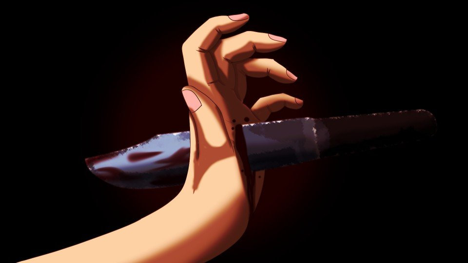

Hidden route of scene 213 (The Succession Rite)

The alcohol had long since worn off.
What I had to do now mattered more than the succession rite.
What I had to do now mattered more than the succession rite.
I would put on the red robes and the Noh mask, and take up the nata and the mace.
That was how it was supposed to go...
All I had was a single nata.
As soon as I got outside, I climbed the cherry tree and surveyed the whole settlement.
That was how it was supposed to go...
All I had was a single nata.
As soon as I got outside, I climbed the cherry tree and surveyed the whole settlement.
Yes, I had skipped out on the succession rite.
So the one heading to the graveyard clearing right now was my stand-in.
That person and I had gotten our stories straight beforehand and made this plan.
It was all at the request of that person―Auntie.
So the one heading to the graveyard clearing right now was my stand-in.
That person and I had gotten our stories straight beforehand and made this plan.
It was all at the request of that person―Auntie.
Right now, the Kogori couple from Motoki-cho would be in the storage shed near Arata Station.
They were hiding there so they could go help right away if danger came to Natsumi-chan and her friends.
A bugging app had been planted in the smartphones of Natsumi-chan and her friends.
If anything happened to Natsumi-chan and her friends, the Kogori couple would know at once.
They were hiding there so they could go help right away if danger came to Natsumi-chan and her friends.
A bugging app had been planted in the smartphones of Natsumi-chan and her friends.
If anything happened to Natsumi-chan and her friends, the Kogori couple would know at once.
Even so, it seemed a somewhat reckless decision.
For an ordinary person, getting from Arata Station to the settlement takes at least 2 hours.
That means for 2 hours after something happens, they can't help.
For an ordinary person, getting from Arata Station to the settlement takes at least 2 hours.
That means for 2 hours after something happens, they can't help.
Well, I do understand how they feel.
They must be worried sick, sending their daughter and her friends to a place where incidents like this keep happening.
They looked for whatever they themselves could do, and what they arrived at was hiding in the storage shed.
They must be worried sick, sending their daughter and her friends to a place where incidents like this keep happening.
They looked for whatever they themselves could do, and what they arrived at was hiding in the storage shed.
But I wondered why they would go this far.
Hadn't it occurred to the Kogori couple to attend the thirteenth-year memorial service themselves? [TN: Buddhist memorials count the year of death as the first year.]
No, under the original plan, the Kogori couple were the ones who would attend.
Somehow, that had turned into their daughter and her friends going.
Hadn't it occurred to the Kogori couple to attend the thirteenth-year memorial service themselves? [TN: Buddhist memorials count the year of death as the first year.]
No, under the original plan, the Kogori couple were the ones who would attend.
Somehow, that had turned into their daughter and her friends going.
But I have a vague idea of the reason.
Most likely, Natsumi-chan has a danger-sense ability.
She judged it dangerous for the Kogori couple to go to the Arata settlement, so she and her friends went in their place.
That is how I see it.
But Auntie never said so outright.
Most likely, Natsumi-chan has a danger-sense ability.
She judged it dangerous for the Kogori couple to go to the Arata settlement, so she and her friends went in their place.
That is how I see it.
But Auntie never said so outright.
Was it because the people of the settlement fear danger sense as the witch's power?
So, since I am a person of Arata too, there was the worry that I might likewise see anyone with danger sense as a threat.
And that was why Auntie didn't tell me.
One could see it that way, too.
So, since I am a person of Arata too, there was the worry that I might likewise see anyone with danger sense as a threat.
And that was why Auntie didn't tell me.
One could see it that way, too.
―!!
The front door opened.
A small figure came running out of it.
The front door opened.
A small figure came running out of it.


It was Kana.
If Kana, who had been told to go to bed, was running out alone, then...
My hand tightened on the nata.
My hand tightened on the nata.
Kana headed swiftly for the mountain path.
I followed Kana, doing my best not to be noticed.
She was fast, as I'd expected.
Kana was smaller than me, and her five senses were keen.
Chasing her without losing sight of her, and without being noticed, was hard work.
I focused every nerve on my eyes and chased after Kana.
I hacked away the branches in my way with the nata as I ran, and went down the mountain along the tracks Kana had left.
Kana was smaller than me, and her five senses were keen.
Chasing her without losing sight of her, and without being noticed, was hard work.
I focused every nerve on my eyes and chased after Kana.
I hacked away the branches in my way with the nata as I ran, and went down the mountain along the tracks Kana had left.
There was a reason I hadn't stopped Kana right away.
If the residents saw the two of us arguing, their bloodlust would flare, and there was no telling what they would do.
And above all, I could not let Dad learn what I was doing.
If the residents saw the two of us arguing, their bloodlust would flare, and there was no telling what they would do.
And above all, I could not let Dad learn what I was doing.
Once we got halfway down the mountain like this, I would call out to Kana and first try to talk her around.
If that didn't work― it would get a little rough, but I would have to swing this nata.
I would not be swinging this nata to hurt Kana.
It would be to keep there from being any more victims.
If that didn't work― it would get a little rough, but I would have to swing this nata.
I would not be swinging this nata to hurt Kana.
It would be to keep there from being any more victims.
―!?
Suddenly something caught my foot, and I went down.
What on earth had I tripped on?
However used to life in Tokyo I'd gotten, for me to fall in the mountains―
Suddenly something caught my foot, and I went down.
What on earth had I tripped on?
However used to life in Tokyo I'd gotten, for me to fall in the mountains―
"You let your guard down, Sis."
A small figure stood in my way.
A small figure stood in my way.


"Mm... Kana..."
"Why are you here, Sis? What about the succession rite?"
"Why are you here, Sis? What about the succession rite?"
Tree vines were wound tight around my leg.
It was a trap for catching animals.
From the look of it, Kana must have foreseen that I would follow her.
So she had picked the route with the trap and waited for me to be pinned down.
It was a trap for catching animals.
From the look of it, Kana must have foreseen that I would follow her.
So she had picked the route with the trap and waited for me to be pinned down.
"Daddy told me. He said the real culprit of the curse-killings is in the storage shed."
"Kh...!"
"Sis, if you followed me... did you maybe come to help me?"
"Mm... Kana! No! You mustn't hurt those people!"
"Kh...!"
"Sis, if you followed me... did you maybe come to help me?"
"Mm... Kana! No! You mustn't hurt those people!"
"Why?"
"Mm... Why, you ask... Those people are not the culprits!"
"Why? Why would you know that, Sis?"
"Mm... Listen, Kana! I'll explain properly."
At that, Kana crouched down in front of me.
"Mm... Why, you ask... Those people are not the culprits!"
"Why? Why would you know that, Sis?"
"Mm... Listen, Kana! I'll explain properly."
At that, Kana crouched down in front of me.

"Yeah, I'm listening."
"Mm... Now, Kana! You must not do what Dad tells you!"
"............"
"Mm... You understand by now, don't you? In this incident, Dad...!"
"Liar."
"Mm... Now, Kana! You must not do what Dad tells you!"
"............"
"Mm... You understand by now, don't you? In this incident, Dad...!"
"Liar."
"What?"
"That's a lie, right? What you said."
"Why...!"
"'Cause Daddy was being watched the whole time a few years ago, wasn't he? And people still died, didn't they? So how could Daddy kill anybody?"
"Mm... That's...!"
"That's a lie, right? What you said."
"Why...!"
"'Cause Daddy was being watched the whole time a few years ago, wasn't he? And people still died, didn't they? So how could Daddy kill anybody?"
"Mm... That's...!"
"Hm... I see...
I get it. The one who killed people while Daddy was being watched was you, Sis."
"Kana...!"
"That way, everybody would get that Daddy isn't the culprit."
"Hey, listen, Kana!"
"Kana...!"
"That way, everybody would get that Daddy isn't the culprit."
"Hey, listen, Kana!"

Just then, cold and heat pierced my left arm at the same time.
Kana had... stabbed me...?
Kana had... stabbed me...?
"Guh...!"
Kana made sure the knife was planted in my left arm, then slowly drew out the blade.
Kana made sure the knife was planted in my left arm, then slowly drew out the blade.
"Haha, I went and stabbed you, Sis."
Kana, giggling vacantly― could this girl really be Kana?
Her actions and her manner were so unbelievable that I doubted it.
Kana, giggling vacantly― could this girl really be Kana?
Her actions and her manner were so unbelievable that I doubted it.
"Mm... What are you doing...!"
"It's punishment. I'm punishing the culprit behind the curse-killings."
"Mm... I am... your family, Kana!?"
"So what?"
"What...?"
"It's punishment. I'm punishing the culprit behind the curse-killings."
"Mm... I am... your family, Kana!?"
"So what?"
"What...?"
"So what about it? If you're family, you can't be the culprit?
That's weird logic, right? Even a kid can tell it's weird."
"Mm... Kana, you would... kill your family...!?"
"Hmm, well, sure, I don't wanna kill them. But the culprit killed this many people, right? If you tell the culprit to stop now, after all that, will they listen?"
"Mm... Kana, you would... kill your family...!?"
"Hmm, well, sure, I don't wanna kill them. But the culprit killed this many people, right? If you tell the culprit to stop now, after all that, will they listen?"
"I...!
I don't want to kill anyone! I don't want you to kill anyone either, Kana!
So don't lay a hand on the people in the storage shed!"
"So that means Daddy was lying, right? Then Daddy's the culprit, isn't he? Should I kill Daddy?"
"Kana...!"
"So that means Daddy was lying, right? Then Daddy's the culprit, isn't he? Should I kill Daddy?"
"Kana...!"
And from the eyes of Kana, who had been reeling off cold-blooded words―
big drops began to fall.
"Then who's supposed to be the culprit!?
Hey, Sis! Tell me!
Who would you accept as the culprit!?"
Kana, who had suddenly started shouting, ground her teeth, her shoulders shaking.
Kana, who had suddenly started shouting, ground her teeth, her shoulders shaking.

"It's a lie that this incident is a curse... Somebody's killing people...
Maybe it's Daddy.
Sis, maybe it's you.
Maybe it's somebody from another house.
Maybe it's the people in the storage shed.
Hey, Sis, who would make you happy as the culprit?"
"I've been thinking about it this whole time. Ever since I fought with Sis at New Year's, I've been thinking.
I don't wanna think Daddy or Sis is the culprit.
But...
But, like... What would you do if the culprit was family?
I... I don't want my family doing any more bad things..."
"Uggh...!"
This time the knife went into my side.
This time the knife went into my side.
"Sis, get it now? I'm serious."
"I'm sick of it!
So I'll end it all myself! I'll punish the bad people!"

I caught the knife coming at my face with my palm, and the tip of the blade, coated in blood, poked out through the back of my hand.
"S... stop...!"
"Then say it clearly! Sis, say it clearly, that you're not the culprit! I can't trust anybody! It's paranoia!"
"Gh... Kana...!"
If I took any more hits, my life would be in danger.
My hand tightened on the nata I had barely kept hold of.
"Then say it clearly! Sis, say it clearly, that you're not the culprit! I can't trust anybody! It's paranoia!"
"Gh... Kana...!"
If I took any more hits, my life would be in danger.
My hand tightened on the nata I had barely kept hold of.
"I see, Sis. You're planning to kill me too.
Right, there's no proof I'm not the culprit either."
"Mm... I am...! not the culprit!"
"I was waiting for you to say that, but you sure took your time. Is this the culprit begging for mercy?"
"No...!"
"Mm... I am...! not the culprit!"
"I was waiting for you to say that, but you sure took your time. Is this the culprit begging for mercy?"
"No...!"
"Then tell me. Who's the culprit?
If you're going this far, Sis, you know, don't you?
'Cause I'm gonna go kill that person."
The pain where I'd been stabbed was getting worse.
My left arm, my palm, and my side.
The wound in my side especially must have reached my organs.
The pain where I'd been stabbed was getting worse.
My left arm, my palm, and my side.
The wound in my side especially must have reached my organs.
If treatment is delayed, I will die.
But rushing to a hospital in this situation is hard.
In other words, my life may run out right here.
In that case―
But rushing to a hospital in this situation is hard.
In other words, my life may run out right here.
In that case―
"Mm... Kana, all right.
The culprit is me. Just like you said, Kana, I killed the people who suspected Dad.
So... don't hurt anyone anymore..."
An impact jolted my cheek.
It wasn't the knife, but a slap.
It wasn't the knife, but a slap.
"Don't mess with me! That's just giving up!
Don't you seriously want to solve this incident!?
Sis, killing you wouldn't mean anything!"
"Mm... Kana, I don't want you hurting people anymore! Thinking you can solve it by killing people is wrong!"
"Then what am I supposed to do!? Whoever it was that killed Mommy, I'll never forgive them!"
"Mm... Kana, I don't want you hurting people anymore! Thinking you can solve it by killing people is wrong!"
"Then what am I supposed to do!? Whoever it was that killed Mommy, I'll never forgive them!"
Just then, my mind reeled and faded for an instant.
As I'd thought, the wound in my side seemed deep.
As I'd thought, the wound in my side seemed deep.
"Haha... So I'm gonna end up killing you, Sis...
With that wound, you can't be saved anymore, right?"
"Then...! Then at least listen to my last request...! Don't hurt anyone!"
"............"
"Then...! Then at least listen to my last request...! Don't hurt anyone!"
"............"
Then Kana turned her back to me.
"Then why don't you just kill me? Go on, with that nata."
"Kana..."
"I'm... gonna end up killing you, Sis, so... I can't go on living like normal anymore, can I? So I'm gonna go kill every suspicious person, starting now."
"Stop it!"
"Kana..."
"I'm... gonna end up killing you, Sis, so... I can't go on living like normal anymore, can I? So I'm gonna go kill every suspicious person, starting now."
"Stop it!"
"So if you don't like it, cut me down."
"............"
"Then just tell me one thing. Who's in the storage shed?"
"Mm... Natsumi-chan's parents."
"............"
"Then just tell me one thing. Who's in the storage shed?"
"Mm... Natsumi-chan's parents."
"Natsumi-chan's?"
"Mm... Since this is a settlement where incidents like this happen, they're there so they can go help if it comes to that."
"I see... Haha, then there's no way they're the culprits... I seee, I seee! So Sis was right and Daddy was wrong."
Then, still with her back to me, Kana took one step forward.
"Mm... Since this is a settlement where incidents like this happen, they're there so they can go help if it comes to that."
"I see... Haha, then there's no way they're the culprits... I seee, I seee! So Sis was right and Daddy was wrong."
Then, still with her back to me, Kana took one step forward.
"I'm going back to the settlement.
I'll punish Daddy.
No, I'll kill everyone suspicious."
"Kana!"
"Otherwise people are just gonna keep dying every year, right?"
"No killing!"
"Why? Because they're family?"
"Kana...!"
"I'm going now. Sis, I'm sorry. I never meant to kill you."
"Kana!"
"Otherwise people are just gonna keep dying every year, right?"
"No killing!"
"Why? Because they're family?"
"Kana...!"
"I'm going now. Sis, I'm sorry. I never meant to kill you."
So this is it...
If I don't stop Kana now, not just Dad but other people too will die by Kana's hand.
Judging by what she did to me, she will really go and kill.
I don't have much life left either.
There's nothing left―but this!
If I don't stop Kana now, not just Dad but other people too will die by Kana's hand.
Judging by what she did to me, she will really go and kill.
I don't have much life left either.
There's nothing left―but this!
"Ugh...!"
The moment I swung the nata, Kana let out a dull scream.
And then she sank to her knees.
The moment I swung the nata, Kana let out a dull scream.
And then she sank to her knees.

On her hunched back was a large gash.
"Haha... So you really mean to stop me from killing Daddy and the others..."
The truth is, I wanted to protect Kana too.
But to keep there from being any more victims, I had no choice but to stop my own little sister.
Badly wounded and held fast by the trap, all I could do was― cut Kana down.
The truth is, I wanted to protect Kana too.
But to keep there from being any more victims, I had no choice but to stop my own little sister.
Badly wounded and held fast by the trap, all I could do was― cut Kana down.
"Ow, ow... But with a wound this small...
maybe I can make it home..."
"W-wait...!"
"Before I die... I'll do what I can... Sis, so you turned traitor. You said you wanted to solve the curse-killings, and in the end you're covering for the culprit."
"W-wait...!"
"Before I die... I'll do what I can... Sis, so you turned traitor. You said you wanted to solve the curse-killings, and in the end you're covering for the culprit."
Kana, down on her knees, staggered to her feet and headed off toward the settlement.
"Kh..."
I have to get out of this trap, fast...!
I don't have much time left either...!
If Kana makes it home like that, Kana will...!
I have to get out of this trap, fast...!
I don't have much time left either...!
If Kana makes it home like that, Kana will...!